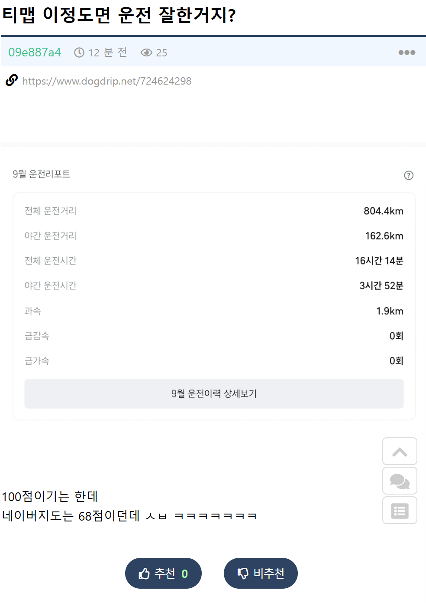
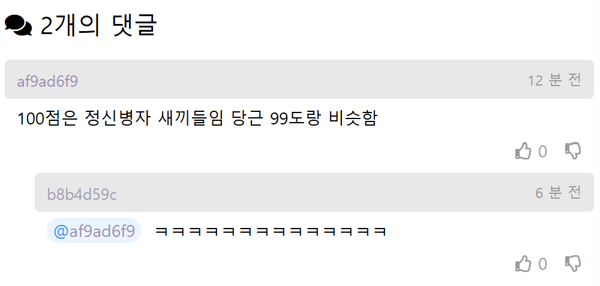

800km 주행에 과속 1.9km ㄷㄷㄷ


800km 주행에 과속 1.9km ㄷㄷㄷ
요즘 뭐 바꼇나 갑자기 나도 100점 이네?
나 지금 티맵 98점이네 최고 99점 찍아봤는데 죽어도 100점은 안가던데 ㄷㄷ
보통 100점에서 1점 깎이면 많으면 한 적으면 50정도로도 회복하지만 안좋으면 1500~2500km정도를 감점없이 쌓아야함
나도 100점임.
비결은 바로 고속도로에서만 켜기 이다.
하이브리드 차 탈땐 나도 99점이었는데 테슬라 타면서 점수 박살남ㅋㅋ
나는 40점에서 테슬라타고 100점 찍었는디
퍼포먼스 모델이라 막나감
고속도로만타면 100잘나오더라
한달 내내 장거리 운전하면 그냥 찍는데 정신병자 취급 ㅋㅋ
ㅋㅋ

보험료 할인받을때 고속도로 몇번올려서 키면 100점 바로 만들자나
티맵 과속체크는 제한속도 15km 넘으면 잡힘
60도로에서 1차로 쌩쌩갈 애들은 가라하고 난 걍 2.3차로에서 70~75 정도로 가면 진짜 90밑으론 안내려감
출퇴근길 얼추 신호외워서 여긴 때려밟아도 다음신호 못간다치면 적당히가고 급감속만 안하면 됨
출퇴근길이 급감속이 문제라
과속충인데 53점이네 존나 낮네
6개월간 4,000km정도 타는동안 급감속은 예닐곱번 나와도
급가속은 0번찍히던데…?
1차선 정속주행하니까 그냥 90점 넘던데?
악마같은놈
어허 1차선에서 2차선 차량이랑 어깨걸고 나란히 주행해버린다
티맵 딴건 몰라도 급정거가 개빡치는게 황색 신호에서 교차로 진입 전이면 지나가지 말고 멈추라는게 판례인데 그러면 급정거로 점수 박살남ㅋㅋ 그정도는 아니라도 좀 애매할때 통과 안하고 멈추면 또 개박살남. 황색신호는 웬만하면 통과하라는게 티맵 기조인가봄
이제는 노란불 바뀌자마자라도 서야한다고 대법 판례가 바뀜
그 얘기 하는거잖아; 무슨 말을 하고 싶은거야;;
그렇게 바뀐거라고 이야기하는거잖아, 무슨 말을 하고 싶은거야;;
씨발 저거 황색불에 멈췄다가 95점에서 2km 남기고 89점됨 진짜 존나빡침
난 그래서 카메라 있는 신호등이면 티맵 미리 끔
티맵 점수는 당근 온도와 의미가 비슷하다
네이버 진짜 개병신임
티맵기준 95점인데
네이버는 60점도 안됨
개씹 할배운전 유령정체 하는 씹새끼 검거
지금 당장 죽어도 여한이 없는 과속충 검거
출퇴근길에 킨다면 급감속 확률이 매우 높으니 카메라때는 끄거나 그냥 고속도로에서 스택올리셈
시골갈때 폰 3대 안드오토 티맵 켜고 왕복하니까
키로수랑 다 x4로 채워지더라
막타다가 보험갱신때 점수채우면됨
고속도로기준 2 3차선 80 100밟고가면 된다고하는데 쉽지않음...
장거리 태우고 크루즈 놓고 뇌비우고 하니깐 100점 가까이 나오던대
티맵 95점
네이버 7점
궁금해서 어디까지 떨어지나 실험해봄
써킷탈때 비행기 탈때 계속켜봤는데
훅훅 떨어지더라ㅋㅋㅋ
난 97점정도 되는데
회사차 포터 탈때만 쓰는데 네이버 100점임
일단 짐 실으면 급가속이 안되고, 과속도 점수 크게 안깎이는듯 100km 가면서 짜잘짜잘한거 합치면 과속 구간이 2km인데 안깎임
야간+급가속/급감속이 영향 큰듯
올림픽대로나 고속도로만 주로 타서 점수 깎일 일이 딱히 없기도 하고
늘 80~90점대였는데 저번달부터 갑자기 100점되서 고정됨...과속을해도 안떨어짐